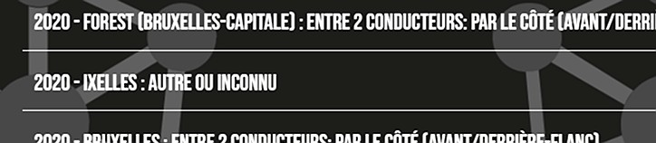

Dataplay
Bruxelles
Vie

Descend pour voir

Descend pour voir
Ce projet représentait notre première expérience de développement collaboratif sur GitHub, un outil qui permet de travailler à plusieurs sur un même code et de fusionner les contributions de chacun. Le cahier des charges était de créer un site interactif regroupant des jeux de données, mis en valeur à travers des visualisations graphiques.
Ce projet représentait notre première expérience de développement collaboratif sur GitHub, un outil qui permet de travailler à plusieurs sur un même code et de fusionner les contributions de chacun. Le cahier des charges était de créer un site interactif regroupant des jeux de données, mis en valeur à travers des visualisations graphiques.
Notre concept portait sur les accidents de la route à Bruxelles. L’idée principale d’interactivité était d’intégrer une voiture qui se déplace au fil du scroll, avec un paysage qui change à chaque transition. Nous avions imaginé que lorsque la voiture passe sous un tunnel, le décor change complètement. Pour les données, nous voulions intégrer une carte de Bruxelles, avec des filtres par commune. À chaque changement de filtre, une zone marquée par de gros points rouges et des données apparaissait pour indiquer le nombre d'accidents recensés.
Au bout des quatre heures de brainstorming, c’est cette idée que nous avons retenue. Nous étions confiants quant à sa pertinence et sa validation par les enseignants. En fin de semaine, nous avons préparé des slides pour présenter et « vendre » notre concept afin de pouvoir officiellement lancer le projet. Les professeurs ont beaucoup apprécié notre proposition et nous ont orientés vers quelques pistes d’amélioration pour renforcer la clarté et l’impact de notre approche.
La partie JavaScript de ce projet collaboratif s’est avérée un peu compliquée : non pour la difficulté mais pour le filtrage des données. Nous avions trouvé un fichier Excel comprenant des accidents qui se sont déroulés entre 2017 et 2022 dans toute la Belgique et nous devions la filtrer pour n’avoir que les accidents qui se sont déroulés dans Bruxelles.
Lorsque nous avions ouvert le fichier Excel, nous nous sommes retrouvés avec plus de 200000 lignes de données dans le tableur avec toutes sortes de données concernants les accidents tels que le lieu, le type de collision, les différents types de véhicules entre conducteurs, la météo durant l’accident, et la condition de la route pour en citer une partie.
Étant confrontés à un volume de données trop important, notre groupe a décidé de réduire le nombre de filtres à intégrer dans notre site. Nous avons finalement retenu trois filtres principaux : l’année de l’accident, la commune où il a eu lieu, et le type de collision entre les usagers.
Une fois ces filtres définis, nous sommes passés à la création du fichier JSON. Conscients que cette tâche allait être chronophage, nous avons fait appel à une intelligence artificielle pour convertir un fichier Excel en un fichier JSON structuré et exploitable.
Une fois le fichier JSON prêt, nous avons pu entamer le développement en JavaScript. Avec l’aide de l’IA, nous avons mis en place un système de filtrage dynamique permettant d’afficher les résultats en fonction des critères sélectionnés.